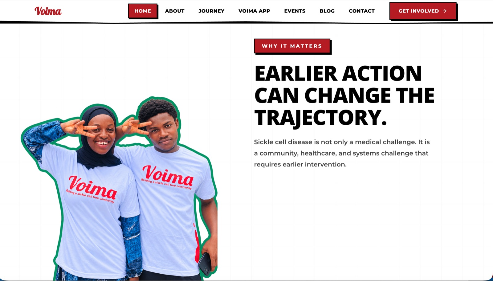
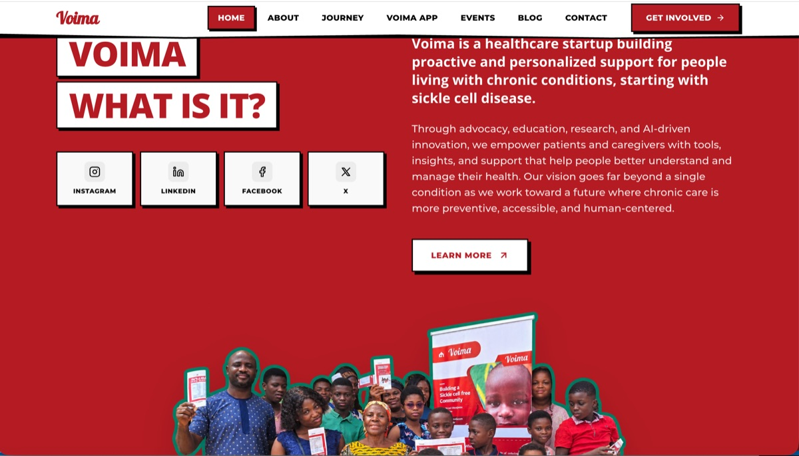
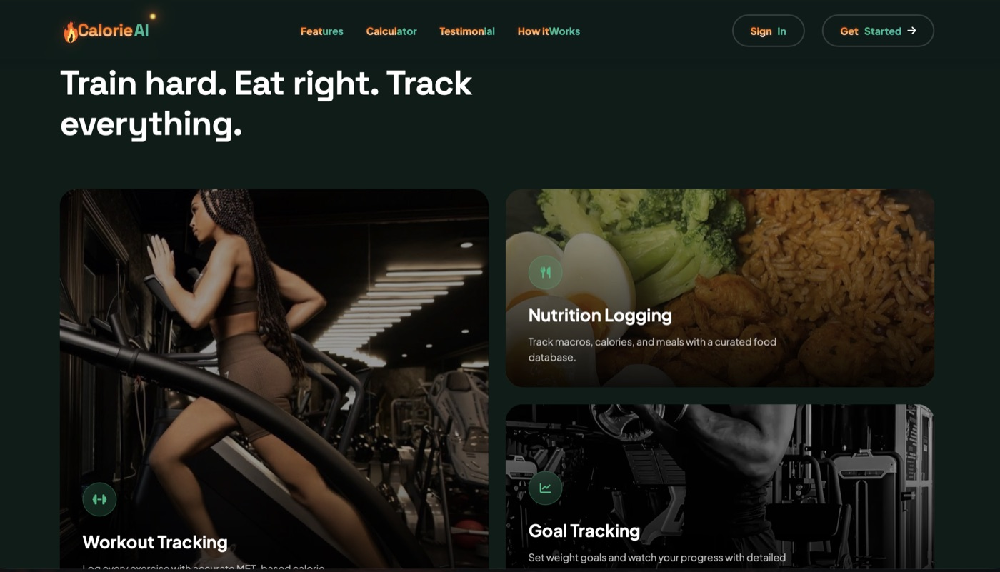
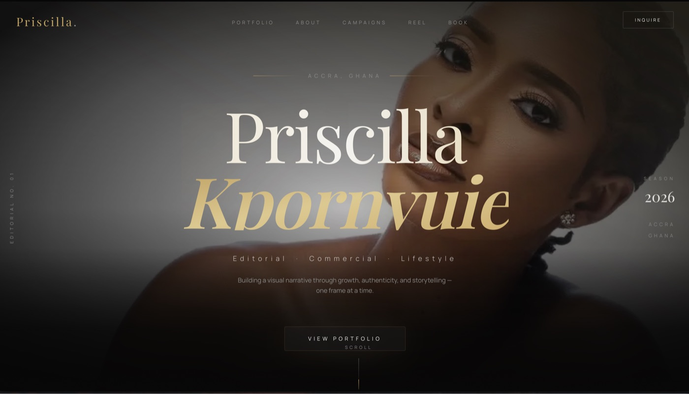
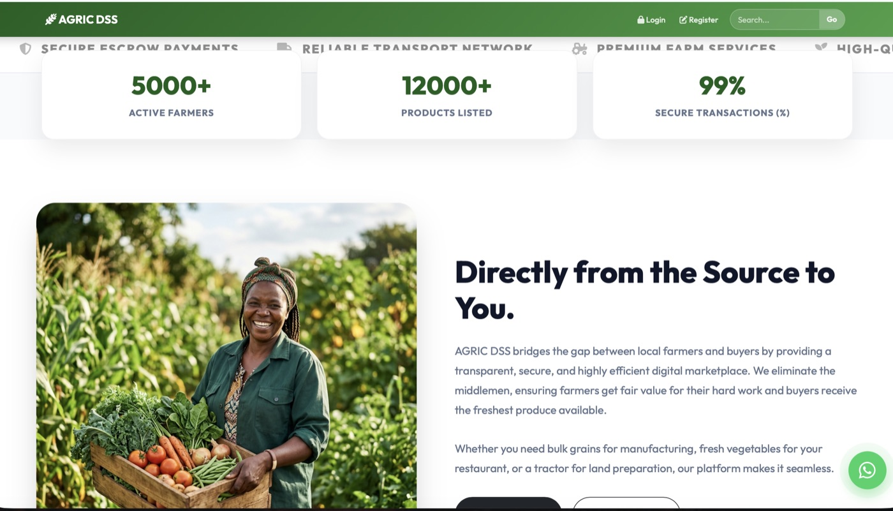
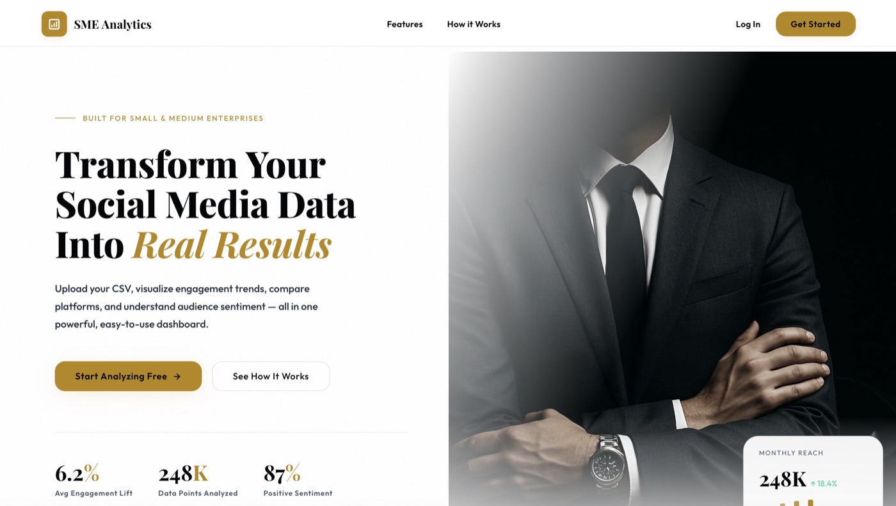
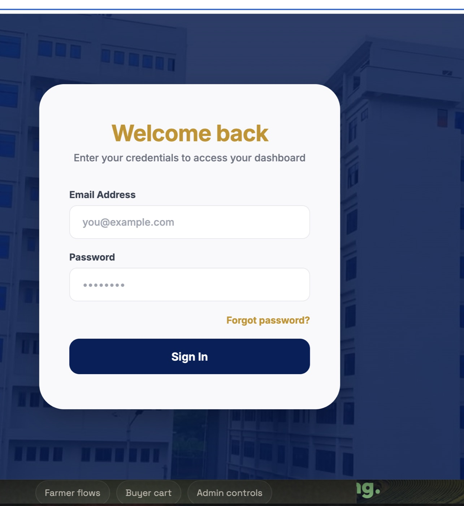
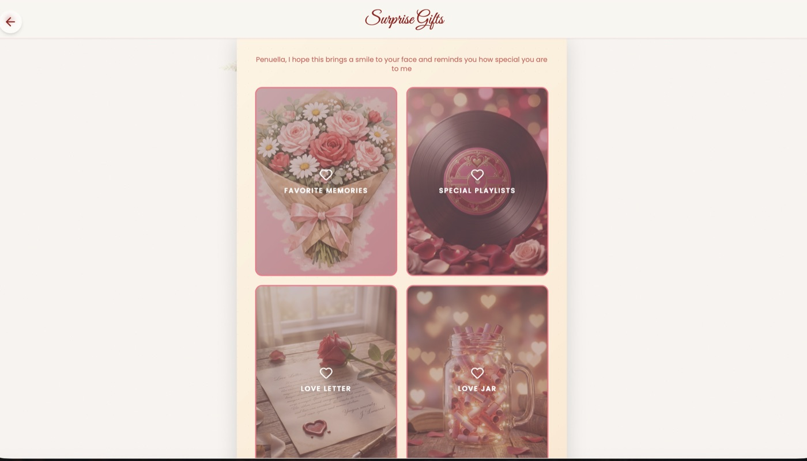
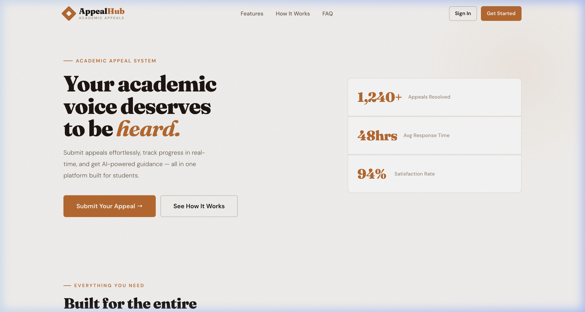

Apps & Software
Web and mobile apps, dashboards, APIs, and full-stack features.

AVAILABLE FOR SELECT PROJECTS // 2026
Accra, Ghana Available for remote work worldwide
Education & focus
My BSc in Information Technology Management gave me a foundation for understanding how technology supports people and organizations. I carry that into full-stack work—bringing data, workflows, and interfaces together to make complex work feel clear and dependable.
More about me
What I bring
I connect the software with the data, processes, and coordination that help teams put it to work.
Web and mobile apps, dashboards, APIs, and full-stack features.
IT work and business processes shaped around dependable day-to-day workflows.
Organized data workflows that keep information useful, consistent, and accessible.
Coordinating delivery, testing features, debugging issues, and checking quality.
Selected work · 01—05
Products and experiences built to make complex workflows clearer, from health and analytics to fitness, agriculture, and creative portfolios.
Scroll to explore the workFull-Stack Developer Intern · Remote
As part of Voima’s intern team, helped redesign its live platform for sickle cell care. Enhanced the React interface with modern UI and scroll storytelling, built backend features, and managed Sanity content. Worked with the founder and product team on testing, debugging, performance, and accessibility.


Live project · VoimaScience-Based Calorie & Macro Tracking Platform
A precision fitness product with BMR calculation, workout tracking, macro breakdowns, and nutrition-focused product messaging — built with clean HTML, CSS, and JavaScript.

Fashion & Commercial Model Portfolio Website
A Next.js portfolio experience for a model, built around editorial imagery, campaign storytelling, testimonials, booking calls-to-action, and animated visual polish.

Agricultural Marketplace & Decision Support Platform
A PHP and SQLite marketplace connecting farmers, buyers, and admins through product listings, cart flows, orders, subscriptions, messaging, reports, and approvals.

Social Media Insights for Small Businesses
A social media analytics product that helps small businesses understand their performance through CSV uploads, engagement trends, platform comparisons, and sentiment insights.

Playground · Experiments
A collection of useful interfaces and playful ideas, from academic tools to personal web experiences.
Scroll through the playground
An academic document evaluation system for structure, formatting, grammar signals, and similarity, with student, supervisor, and admin workflows.
Visit live demo
A playful React experience with an animated envelope, love letter flow, and Valentine-themed interaction design.
Visit live
An academic appeal system with smart submission, real-time tracking, AI draft review, and an admin analytics dashboard.
Visit liveSignature interaction
This playful terminal-style section is the site's memorable interaction. Click commands to inspect projects, stack, process, and contact details.
About Enoch Thompson
Full-stack developer building practical web systems, thoughtful interfaces, and digital tools that bring order to complicated work.
Scroll to know meProcess
Understand the users, roles, screens, data, and messy real-world rules before touching code.
Create the database structure, authentication flow, routes, and essential user journeys.
Shape the layout, hierarchy, responsiveness, and motion so the product feels clear and trusted.
Document what was built, capture screenshots, prepare demos, and make the work easy to review.
About
My projects sit at the intersection of practical workflows and clean web experiences: academic document evaluation, agricultural marketplaces, dashboards, admin tools, and creative portfolio sites. I care about the whole path from idea to interface, from database to final detail.
Contact · Open for projects
Ghana · Working worldwideHave an idea?
Let’s talk about it.